fit.me<-coxph(Surv(softflare_time, softflare)~Sex+IMD+cat+Smoke+frailty(SiteNo), control =coxph.control(outer.max =20), data =flare.cd.df, model =TRUE)cd.clin.forest<-get_HR(fit.me,c("SmokePrevious", "SmokeNever"))fit.me<-coxph(Surv(softflare_time, softflare)~Sex+IMD+cat+frailty(SiteNo), control =coxph.control(outer.max =20), data =flare.cd.df, model =TRUE)cd.clin.forest<-rbind(cd.clin.forest,get_HR(fit.me,c("SexFemale",paste0("IMD", seq(2, 5)),"catFC 50-250","catFC > 250")))invisible(cox_summary(fit.me))
Cox model summary:
Variable
HR
Lower 95%
Upper 95%
P-value
SexFemale
1.9989
1.5753
2.5364
0.0000
IMD2
0.9364
0.5970
1.4686
0.7746
IMD3
0.8868
0.5609
1.4021
0.6074
IMD4
0.9417
0.6062
1.4631
0.7894
IMD5
0.9857
0.6443
1.5078
0.9469
catFC 50-250
1.5844
1.2278
2.0445
0.0004
catFC > 250
2.4138
1.8192
3.2028
0.0000
Proportional hazards assumption test
Chi-squared statistic
DF
P-value
Sex
0.3091
0.9923
0.5750
IMD
5.8397
3.9497
0.2063
cat
2.3232
1.9815
0.3093
GLOBAL
8.4076
13.9400
0.8643
Warning: `gather_()` was deprecated in tidyr 1.2.0.
ℹ Please use `gather()` instead.
ℹ The deprecated feature was likely used in the survminer package.
Please report the issue at <https://github.com/kassambara/survminer/issues>.
fit.me<-coxph(Surv(hardflare_time, hardflare)~Sex+IMD+cat+Smoke+frailty(SiteNo), control =coxph.control(outer.max =20), data =flare.cd.df)cd.hard.forest<-get_HR(fit.me,c("SmokePrevious", "SmokeNever"))fit.me<-coxph(Surv(hardflare_time, hardflare)~Sex+IMD+cat+frailty(SiteNo), control =coxph.control(outer.max =20), data =flare.cd.df)cd.hard.forest<-rbind(cd.hard.forest,get_HR(fit.me,c("SexFemale",paste0("IMD", seq(2, 5)),"catFC > 250")))invisible(cox_summary(fit.me))
Cox model summary:
Variable
HR
Lower 95%
Upper 95%
P-value
SexFemale
1.3887
1.0579
1.8227
0.0180
IMD2
0.9220
0.5365
1.5844
0.7688
IMD3
0.9675
0.5566
1.6817
0.9068
IMD4
0.8950
0.5222
1.5338
0.6864
IMD5
0.9035
0.5370
1.5199
0.7021
catFC 50-250
2.0217
1.4730
2.7750
0.0000
catFC > 250
3.3366
2.3693
4.6989
0.0000
Proportional hazards assumption test
Chi-squared statistic
DF
P-value
Sex
0.2571
0.9863
0.6064
IMD
4.2174
3.9407
0.3689
cat
8.8712
1.9847
0.0116
GLOBAL
13.9394
19.6668
0.8190
`geom_smooth()` using formula = 'y ~ x'
`geom_smooth()` using formula = 'y ~ x'
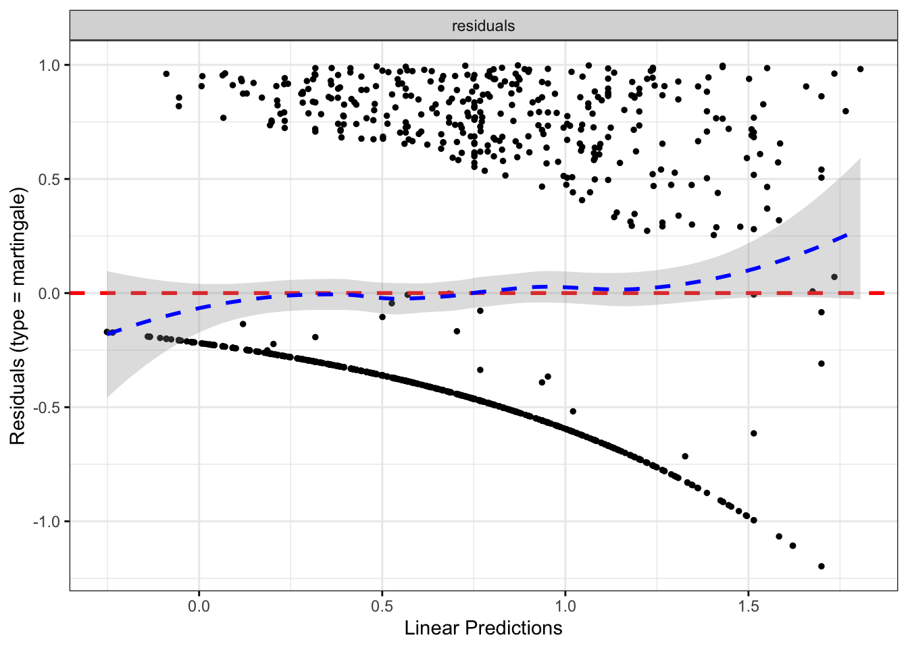
Code
# FC < 50newdata<-flare.cd.df%>%mutate(cat ="FC < 50", hardflare_time =365.25, hardflare =1)predict(fit.me, newdata =newdata, type ="expected", se.fit =TRUE)$fit%>%mean(na.rm =TRUE)
fit.me<-coxph(Surv(softflare_time, softflare)~Sex+IMD+cat+Smoke+frailty(SiteNo), control =coxph.control(outer.max =20), data =flare.uc.df)uc.clin.forest<-get_HR(fit.me,c("SmokePrevious", "SmokeNever"))fit.me<-coxph(Surv(softflare_time, softflare)~Sex+IMD+cat+frailty(SiteNo), control =coxph.control(outer.max =20), data =flare.uc.df)uc.clin.forest<-rbind(uc.clin.forest,get_HR(fit.me,c("SexFemale",paste0("IMD", seq(2, 5)),"catFC > 250")))invisible(cox_summary(fit.me))
Cox model summary:
Variable
HR
Lower 95%
Upper 95%
P-value
SexFemale
1.5438
1.2475
1.9104
0.0001
IMD2
1.2433
0.7856
1.9678
0.3525
IMD3
1.1010
0.7025
1.7255
0.6748
IMD4
1.4420
0.9388
2.2151
0.0946
IMD5
1.1988
0.7858
1.8290
0.4002
catFC 50-250
1.5688
1.2269
2.0058
0.0003
catFC > 250
2.1447
1.6433
2.7991
0.0000
Proportional hazards assumption test
Chi-squared statistic
DF
P-value
Sex
1.3013
0.9907
0.2514
IMD
4.0189
3.9418
0.3949
cat
5.7453
1.9706
0.0550
GLOBAL
11.3236
18.7016
0.9037
`geom_smooth()` using formula = 'y ~ x'
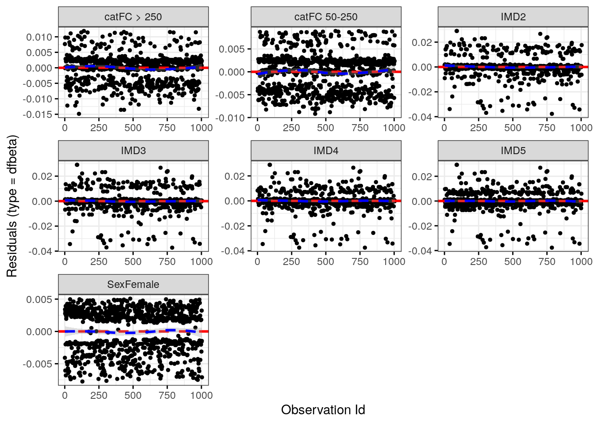
`geom_smooth()` using formula = 'y ~ x'
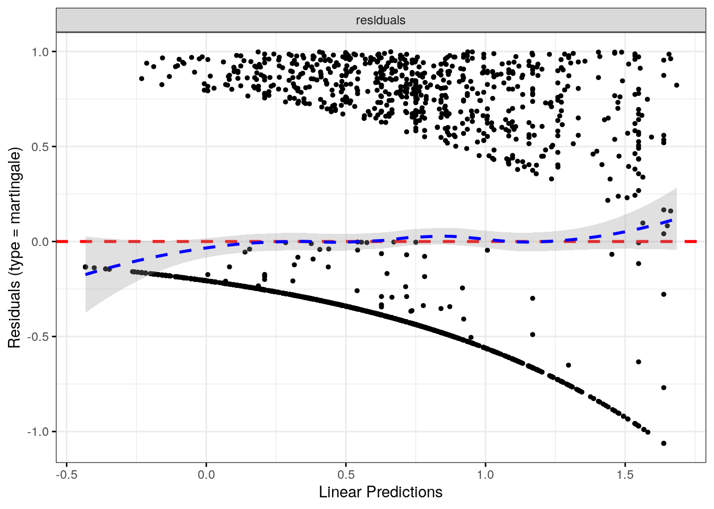
Code
# FC < 50newdata<-flare.uc.df%>%mutate(cat ="FC < 50", softflare_time =365.25, softflare =1)predict(fit.me, newdata =newdata, type ="expected", se.fit =TRUE)$fit%>%mean(na.rm =TRUE)
fit.me<-coxph(Surv(hardflare_time, hardflare)~Sex+IMD+cat+Smoke+frailty(SiteNo), control =coxph.control(outer.max =20), data =flare.uc.df)uc.hard.forest<-get_HR(fit.me,c("SmokePrevious", "SmokeNever"))fit.me<-coxph(Surv(hardflare_time, hardflare)~Sex+IMD+cat+frailty(SiteNo), control =coxph.control(outer.max =20), data =flare.uc.df)uc.hard.forest<-rbind(uc.hard.forest,get_HR(fit.me,c("SexFemale",paste0("IMD", seq(2, 5)),"catFC 50-250","catFC > 250")))invisible(cox_summary(fit.me))
Cox model summary:
Variable
HR
Lower 95%
Upper 95%
P-value
SexFemale
1.3259
1.0208
1.7221
0.0345
IMD2
1.4092
0.7861
2.5260
0.2494
IMD3
1.3774
0.7835
2.4213
0.2659
IMD4
1.7484
1.0130
3.0174
0.0448
IMD5
1.2989
0.7566
2.2298
0.3430
catFC 50-250
2.0322
1.4885
2.7744
0.0000
catFC > 250
3.2203
2.3245
4.4614
0.0000
Proportional hazards assumption test
Chi-squared statistic
DF
P-value
Sex
0.1461
0.9849
0.6962
IMD
2.6145
3.9368
0.6145
cat
4.3647
1.9671
0.1096
GLOBAL
7.4355
23.5846
0.9994
`geom_smooth()` using formula = 'y ~ x'
`geom_smooth()` using formula = 'y ~ x'
Code
# FC < 50newdata<-flare.uc.df%>%mutate(cat ="FC < 50", hardflare_time =365.25, hardflare =1)predict(fit.me, newdata =newdata, type ="expected", se.fit =TRUE)$fit%>%mean(na.rm =TRUE)
fit.me<-coxph(Surv(softflare_time, softflare)~Sex+IMD+cat+frailty(SiteNo), control =coxph.control(outer.max =20), data =flare.df)invisible(cox_summary(fit.me))
Cox model summary:
Variable
HR
Lower 95%
Upper 95%
P-value
SexFemale
1.7183
1.4676
2.0119
0.0000
IMD2
1.0417
0.7555
1.4364
0.8032
IMD3
0.9689
0.7027
1.3360
0.8474
IMD4
1.1549
0.8490
1.5712
0.3590
IMD5
1.0554
0.7814
1.4255
0.7252
catFC 50-250
1.5194
1.2743
1.8117
0.0000
catFC > 250
2.2203
1.8303
2.6934
0.0000
Proportional hazards assumption test
Chi-squared statistic
DF
P-value
Sex
1.9368
0.9936
0.1627
IMD
8.9273
3.9484
0.0609
cat
1.1234
1.9824
0.5659
GLOBAL
12.1742
22.3691
0.9594
`geom_smooth()` using formula = 'y ~ x'
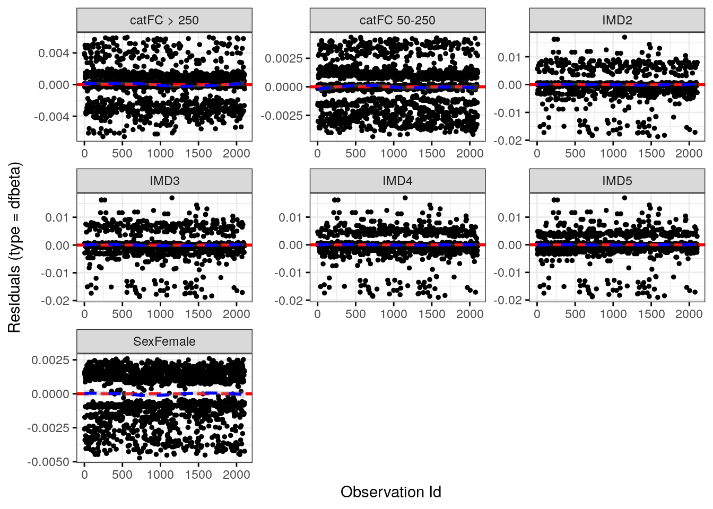
`geom_smooth()` using formula = 'y ~ x'
Code
fit.me<-coxph(Surv(hardflare_time, hardflare)~Sex+IMD+cat+frailty(SiteNo), control =coxph.control(outer.max =20), data =flare.df)invisible(cox_summary(fit.me))
fit.me<-coxph(Surv(softflare_time, softflare)~Sex+IMD+cat+`IBD Duration`+BMI+Treatment+Age+Smoke+frailty(SiteNo), control =coxph.control(outer.max =20), data =flare.cd.df)invisible(cox_summary(fit.me))
Cox model summary:
Variable
HR
Lower 95%
Upper 95%
P-value
SexFemale
2.3665
1.7880
3.1321
0.0000
IMD2
0.8606
0.5236
1.4145
0.5538
IMD3
0.9000
0.5432
1.4909
0.6824
IMD4
0.9740
0.6039
1.5710
0.9141
IMD5
0.9757
0.6125
1.5544
0.9175
catFC 50-250
1.4066
1.0607
1.8653
0.0178
catFC > 250
2.2945
1.6660
3.1602
0.0000
IBD Duration
0.9880
0.9764
0.9998
0.0460
BMI
1.0025
0.9799
1.0255
0.8320
TreatmentMono biologic
1.0530
0.7278
1.5236
0.7840
TreatmentCombo therapy
0.7668
0.4787
1.2281
0.2692
Treatment5-ASA
1.4407
0.7997
2.5952
0.2241
TreatmentNone reported
0.9300
0.6568
1.3166
0.6823
Age
1.0083
0.9989
1.0179
0.0851
SmokePrevious
1.5225
0.9006
2.5740
0.1166
SmokeNever
1.2868
0.7664
2.1606
0.3402
Proportional hazards assumption test
Chi-squared statistic
DF
P-value
Sex
0.0372
1.0000
0.8470
IMD
5.7872
4.0000
0.2156
cat
1.2874
2.0000
0.5254
IBD Duration
3.3065
1.0000
0.0690
BMI
2.2687
1.0000
0.1320
Treatment
6.5956
4.0000
0.1589
Age
0.6126
1.0000
0.4338
Smoke
0.4805
2.0000
0.7864
GLOBAL
20.7752
16.0001
0.1873
`geom_smooth()` using formula = 'y ~ x'
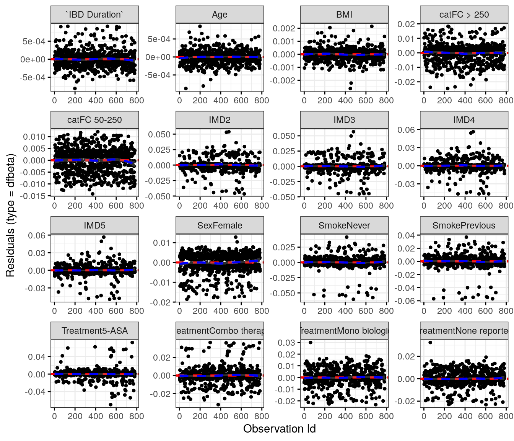
`geom_smooth()` using formula = 'y ~ x'
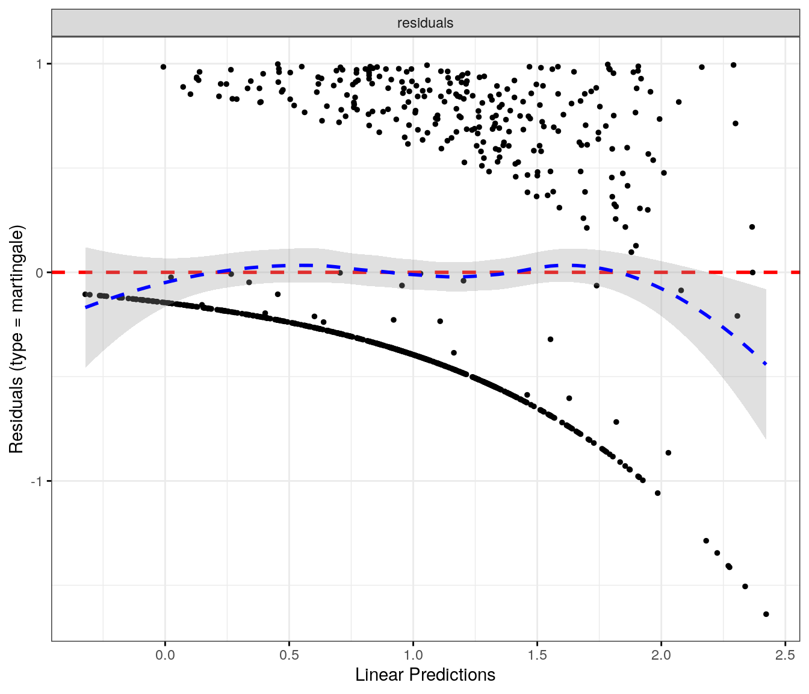
Objective flare
Code
fit.me<-coxph(Surv(hardflare_time, hardflare)~Sex+IMD+cat+`IBD Duration`+BMI+Treatment+Age+Smoke+frailty(SiteNo), control =coxph.control(outer.max =20), data =flare.cd.df)invisible(cox_summary(fit.me))
Cox model summary:
Variable
HR
Lower 95%
Upper 95%
P-value
SexFemale
1.6591
1.1856
2.3216
0.0031
IMD2
0.8097
0.4303
1.5234
0.5126
IMD3
0.7955
0.4172
1.5170
0.4873
IMD4
0.9072
0.4914
1.6750
0.7557
IMD5
0.9736
0.5391
1.7582
0.9293
catFC 50-250
1.9761
1.3551
2.8815
0.0004
catFC > 250
3.6593
2.4321
5.5057
0.0000
IBD Duration
0.9833
0.9676
0.9993
0.0408
BMI
1.0190
0.9907
1.0481
0.1903
TreatmentMono biologic
0.9804
0.6278
1.5309
0.9306
TreatmentCombo therapy
0.7114
0.4007
1.2627
0.2447
Treatment5-ASA
1.3718
0.5994
3.1394
0.4542
TreatmentNone reported
0.7259
0.4741
1.1114
0.1405
Age
0.9922
0.9805
1.0041
0.1978
SmokePrevious
1.3309
0.6861
2.5820
0.3978
SmokeNever
1.2458
0.6572
2.3616
0.5007
Proportional hazards assumption test
Chi-squared statistic
DF
P-value
Sex
1.3707
0.9959
0.2406
IMD
4.6773
3.9847
0.3200
cat
8.8312
1.9978
0.0121
IBD Duration
0.0682
0.9984
0.7934
BMI
4.4479
0.9976
0.0348
Treatment
3.7406
3.9729
0.4381
Age
2.9221
0.9978
0.0871
Smoke
0.4614
1.9966
0.7933
GLOBAL
26.7768
16.7962
0.0575
`geom_smooth()` using formula = 'y ~ x'
`geom_smooth()` using formula = 'y ~ x'
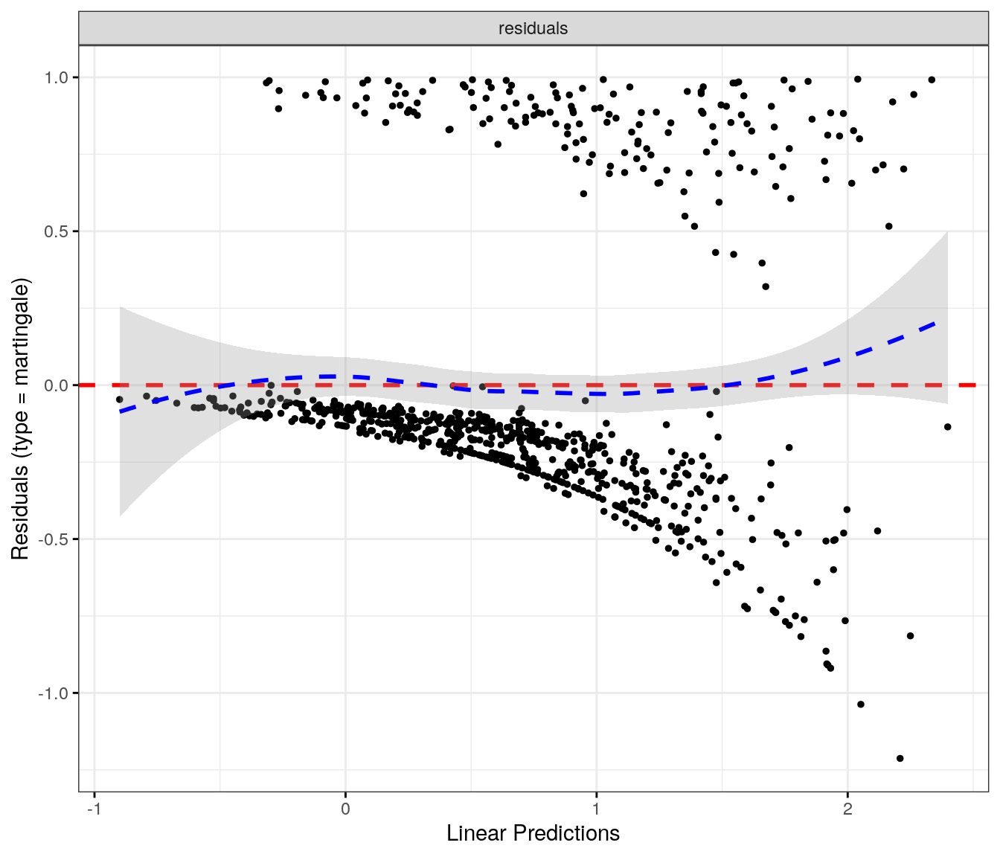
Ulcerative colitis
Patient-reported flare
Code
fit.me<-coxph(Surv(softflare_time, softflare)~Sex+IMD+cat+`IBD Duration`+BMI+Treatment+Age+Smoke+frailty(SiteNo), control =coxph.control(outer.max =20), data =flare.uc.df)invisible(cox_summary(fit.me))
Cox model summary:
Variable
HR
Lower 95%
Upper 95%
P-value
SexFemale
1.5639
1.2287
1.9906
0.0003
IMD2
1.2949
0.7603
2.2053
0.3415
IMD3
1.0556
0.6368
1.7498
0.8338
IMD4
1.4290
0.8815
2.3164
0.1475
IMD5
1.1729
0.7255
1.8963
0.5152
catFC 50-250
1.6777
1.2763
2.2053
0.0002
catFC > 250
2.0136
1.4864
2.7278
0.0000
IBD Duration
0.9960
0.9827
1.0095
0.5586
BMI
0.9860
0.9631
1.0095
0.2408
TreatmentMono biologic
0.7771
0.4934
1.2238
0.2764
TreatmentCombo therapy
0.3769
0.1836
0.7739
0.0079
Treatment5-ASA
1.2407
0.8814
1.7465
0.2163
TreatmentNone reported
1.0219
0.7218
1.4468
0.9028
Age
0.9872
0.9778
0.9967
0.0083
SmokePrevious
1.2613
0.6917
2.3000
0.4488
SmokeNever
1.0499
0.5771
1.9099
0.8733
Proportional hazards assumption test
Chi-squared statistic
DF
P-value
Sex
3.1159
0.9986
0.0774
IMD
3.9747
3.9903
0.4080
cat
3.2704
1.9961
0.1944
IBD Duration
1.5844
0.9987
0.2078
BMI
0.2759
0.9981
0.5986
Treatment
1.7348
3.9815
0.7820
Age
0.0232
0.9955
0.8776
Smoke
1.1879
1.9972
0.5515
GLOBAL
16.3694
16.8521
0.4875
`geom_smooth()` using formula = 'y ~ x'
`geom_smooth()` using formula = 'y ~ x'
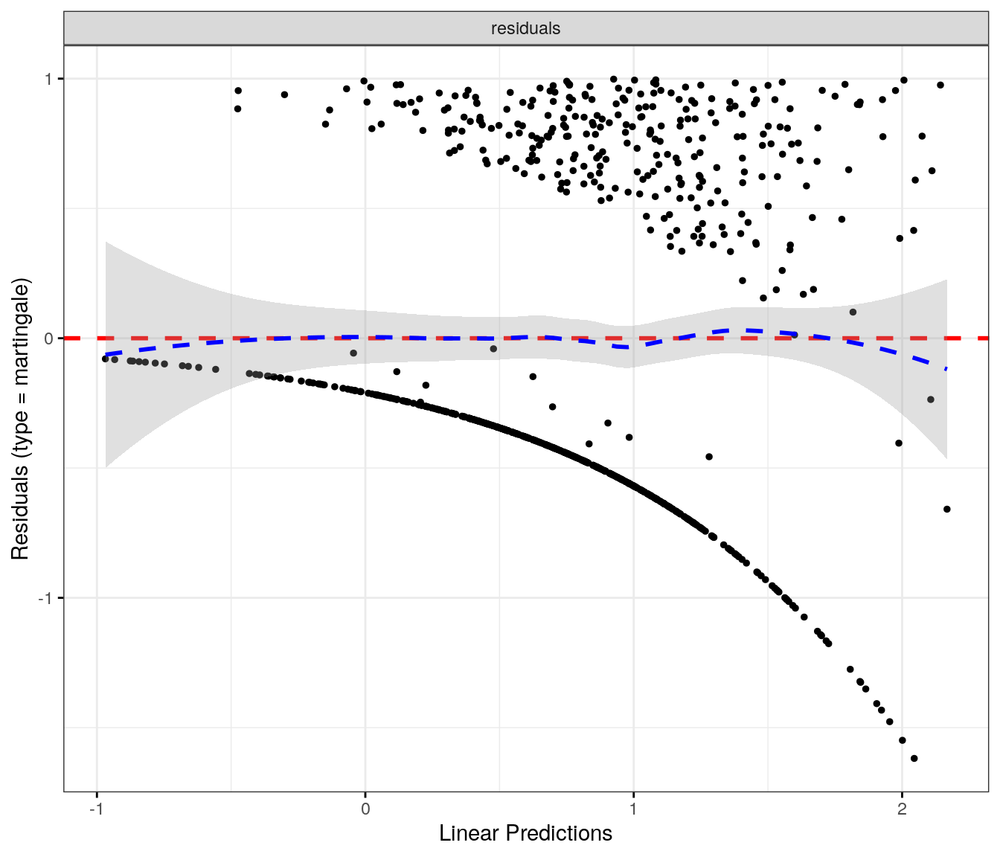
Objective flare
Code
fit.me<-coxph(Surv(hardflare_time, hardflare)~Sex+IMD+cat+`IBD Duration`+BMI+Treatment+Age+Smoke+frailty(SiteNo), control =coxph.control(outer.max =20), data =flare.uc.df)invisible(cox_summary(fit.me))


Social deprivation
Crohn’s disease
Code
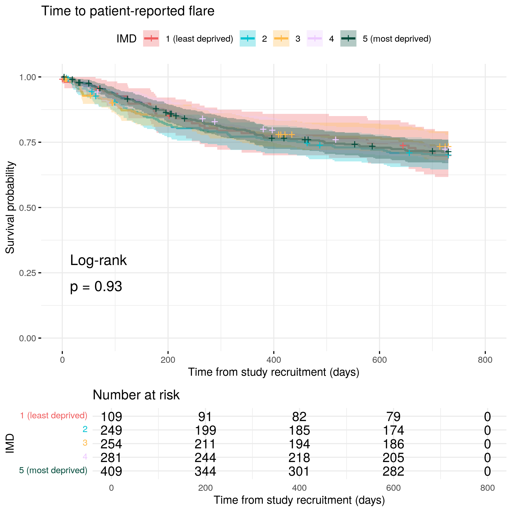
Code
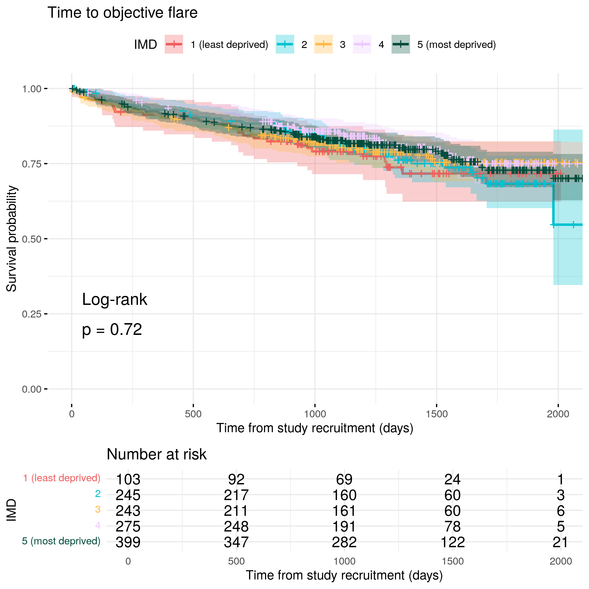
Ulcerative colitis
Code
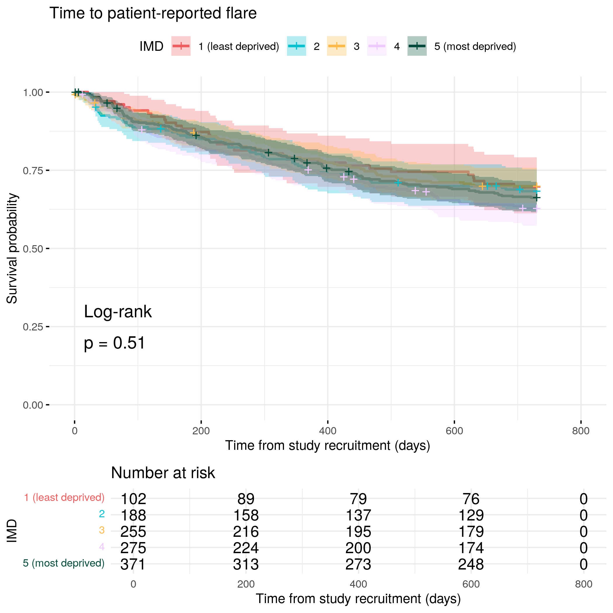
Code
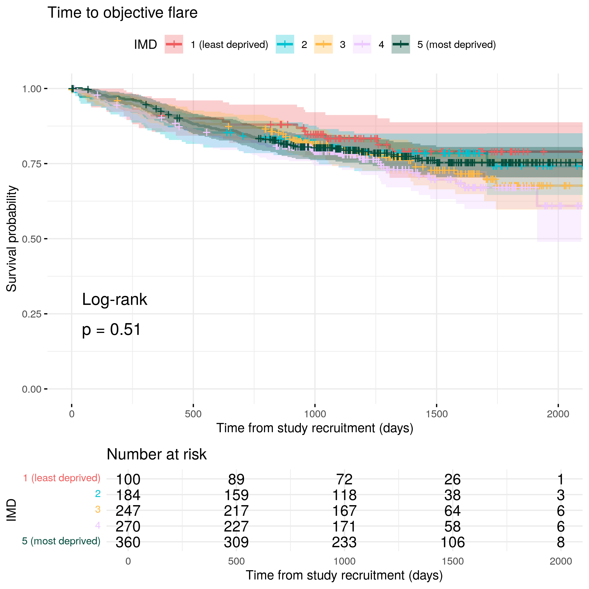